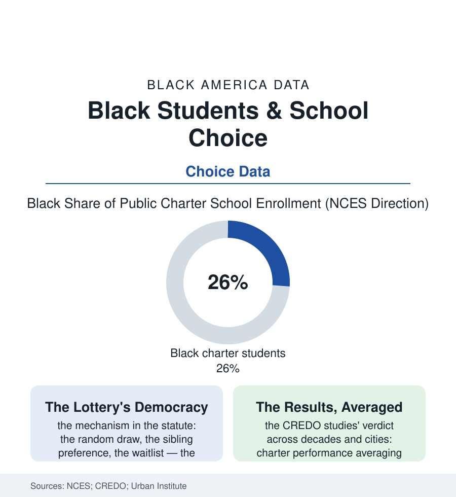

Black Education
The Lottery: Black Families and the School-Choice Market
The charter lottery is the most democratic admission in American education — and the most consequential gamble many Black families ever take with a child's future. The choice file.

No decision in this section's files is taken with more deliberation per dollar at stake than the school choice: the Black parent, armed with the district's data and the neighborhood's gossip, choosing among the assigned school, the magnet, the charter lottery, and the parochial tuition she cannot afford — the market's most consequential consumer with the least slack for error. Charter enrollment runs about a quarter Black, far above the system's share. This article reads the choice file.
The Lottery as Admission
The mechanism deserves its name read aloud: the charter lottery — names in a drum, drawn in a gymnasium, in public, by law — is the only selective-admission system in American education whose choosing is literally random, and Black families enter it at rates the enrollment data make plain, in cities where the assigned school's data are the decision's whole argument. The choice's geography is the city's: the charter clusters in the urban districts of this atlas (the great city networks whose names — KIPP, Success, the local networks — are as familiar in the Black neighborhoods as the district's own), the suburban charter's different story (the program's expansion into the affluent districts rewriting its founding narrative), the magnet lottery beside it (the exam schools' meritocratic gate, the test-prep file's shadow falling across it), and the voucher programs of the statehouse file, whose take-up data run thinner in the Black rows than the rhetoric suggests. The information problem is the market's first inequality, and the research names it: the choice system's winners are, in the studies, the families with the time, the literacy in the bureaucratic dialect, and the transportation to exercise choice — the parent who can tour four schools, decipher four data dashboards, and drive the child to the campus across town when the bus does not come — the lottery's formal equality shadowed by the sorting effects the researchers document (the motivated-family sorting that confounds every comparison of charter and district, the cream-skimming charge and the creaming-defense both partially true in the data). The child's commute becomes the file's first cost-benefit table: the ninety-minute bus ride to the network school versus the ten-minute walk to the assigned building, weighed in the kitchen at the application deadline.
The Scoreboard, Honestly Read
The performance literature, read whole, resists both slogans: CREDO's successive national studies put the average charter's learning growth at or modestly above the district's in reading and math — the urban charter networks' advantage clearest in the great-city data (the Black students in the big-city charter networks gaining the study's signature weeks of extra learning per year), the suburban and rural charter's lag beside it, the distribution's variance enormous (the top-decile charters and the bottom-decile charters separated by more than a school year's learning — the sector's average a statistic that describes no actual child). The governance rows add the file's second controversy: the charter authorizers' closure record (the failing schools actually closed at rates the district's tenure-and-politics machinery rarely matches — the market's genuine disciplinary mechanism), the network's central management (the curriculum, the discipline code, the 'no excuses' culture that produced the sector's early test-score fame and the discipline file's backlash in the same schools' suspension data), the union file's charter chapter (the mostly nonunion sector's wage rows beside the district's scales). The forward data are the enrollment data: the charter share of Black students rising with the sector itself, the district's response in the magnet expansions and the turnaround schools of the reform file, the pandemic's charter conversions (the home-schooling and micro-school experiments the choice market absorbed), and the persistent question the choice file leaves the system — whether the lottery, for all its democratic theater, is a remedy or a ration: a way to choose a school, or a way to ration good schools by chance, in a country whose assigned schools were already rationed by address.
Reading the Choice Data
The choice file is the education section's market chapter: the parent as consumer, the lottery as justice, the bus ride as price. The NCES publishes the enrollments. The gyms, on lottery night — parents holding their children's names like tickets, which they are — publish the stakes, and no dataset in this book is more honest about what a school is worth to a family that cannot buy one.
More in Black Education
Black Educational Attainment: High School Parity, the College Gap
About 89 percent of Black adults hold a high school diploma and one in four holds a bachelor's degree or higher — the attainment ladder, the college completion gap, and the generational trend.
Historically Black Colleges and Universities: Enrollment and Degrees
More than 100 HBCUs enroll roughly 290,000 students and award about one in six Black bachelor's degrees — an outsized share from a small sector. The federal education data.
Black College Enrollment: 2.4 Million Students
About 2.4 million Black students are enrolled in American colleges — nearly two-thirds of them women. The NCES enrollment data by sector, level, and trend.
Source: National Center for Education Statistics charter data; Stanford CREDO charter performance studies; state lottery and enrollment data; Urban Institute school-choice research.